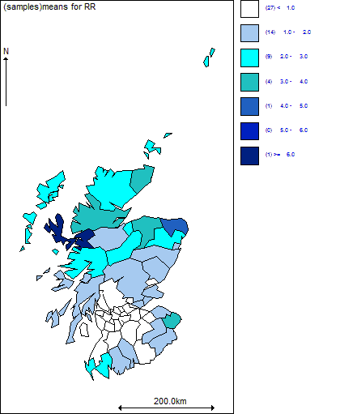
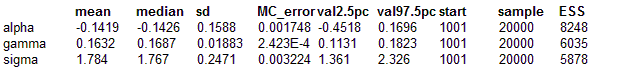

CAR model: Lip cancer revisited
This example illustrates the use of the proper CAR distribution (
car.proper) rather than the intrinsic CAR distribution for the area-specific random effects in the Lip cancer example (9.1). We use the definition of the
C and
M matrices proposed by Cressie and colleagues (see section on
proper CAR models in Appendix 1).
Model model {
# Set up 'data' to define spatial dependence structure
# =====================================
for(i in 1 : N) {
m[i] <- 1/E[i] # scaling factor for variance in each cell
}
# The vector
C[] required as input into the car.proper distribution is a vector
# respresention of the weight matrix with elements Cij. The first J1 elements of the
C[]
# vector contain the weights for the J1 neighbours of area i=1; the (J1+1) to J2
# elements of the
C[] vector contain the weights for the J2 neighbours of area i=2;
# etc. To set up this vector, we need to define a variable
cumsum, which gives the
# values of J1, J2, etc.; we then set up an index matrix
pick[,] with N columns
# corresponding to the i=1,...,N areas, and with the same number of rows as there are
# elements in the
C[] vector (i.e.
sumNumNeigh). The elements
#C[ (cumsum[i]+1):cumsum[i+1] ] correspond to
# the set of weights Cij associated with area i, and so we set up ith column of the
# matrix
pick[,]to have a 1 in all the rows k for which
#
cumsum[i] < k <= cumsum[i+1], and 0's elsewhere.
# For example, let
N=4 and
cumsum=c(0,3,5,6,8), so area i=1 has 3 neighbours, area
# i=2 has 2 neighbours, area i=3 has 1 neighbour and area i=4 has 2 neighbours. The
# the matrix
pick[,] is:
#
pick # 1, 0, 0, 0,
# 1, 0, 0, 0,
# 1, 0, 0, 0,
# 0, 1, 0, 0,
# 0, 1, 0, 0,
# 0, 0, 1, 0,
# 0, 0, 0, 1,
# 0, 0, 0, 1,
#
# We can then use the inner product (
inprod(,)) function in WinBUGS and the kth
# row of
pick to select which area corresponds to the kth element in the vector
C[];
# likewise, we can use
inprod(,) # and the ith column of
pick to select the elements of
C[] which correspond to area i.
#
# Note: this way of setting up the C vector is somewhat convoluted!!!! In future
# versions, we hope the GeoBUGS adjacency matrix tool will be able to dump out the
# relevant vectors required. Alternatively, the C vector could be created using another
# package (e.g. Splus) and read into WinBUGS as data.
#
cumsum[1] <- 0
for(i in 2:(N+1)) {
cumsum[i] <- sum(num[1:(i-1)])
}
for(k in 1 : sumNumNeigh) {
for(i in 1:N) {
pick[k,i] <- step(k - cumsum[i] - epsilon) * step(cumsum[i+1] - k)
# pick[k,i] = 1 if cumsum[i] < k <= cumsum[i=1]; otherwise, pick[k,i] = 0
}
C[k] <- sqrt(E[adj[k]] / inprod(E[], pick[k,])) # weight for each pair of neighbours
}
epsilon <- 0.0001
# Model
# =====
# Likelihood
for (i in 1 : N) {
O[i] ~ dpois(mu[i])
log(mu[i]) <- log(E[i]) + S[i]
# Area-specific relative risk
RR[i] <- exp(S[i])
theta[i] <- alpha
}
# Proper CAR prior distribution for spatial random effects:
S[1:N] ~ car.proper(adj[], C[], num[], theta[], m[], prec, gamma)
# Other priors:
alpha ~ dnorm(0, 0.0001)
# prior on precision
prec ~ dgamma(0.5, 0.0005)
v <- 1/prec # variance
sigma <- sqrt(1 / prec) # standard deviation
gamma.min <- min.bound(C[], adj[], num[], m[])
gamma.max <- max.bound(C[], adj[], num[], m[])
gamma ~ dunif(gamma.min, gamma.max)
}
Data
list(N = 56,
O = c( 9, 39, 11, 9, 15, 8, 26, 7, 6, 20,
13, 5, 3, 8, 17, 9, 2, 7, 9, 7,
16, 31, 11, 7, 19, 15, 7, 10, 16, 11,
5, 3, 7, 8, 11, 9, 11, 8, 6, 4,
10, 8, 2, 6, 19, 3, 2, 3, 28, 6,
1, 1, 1, 1, 0, 0),
E = c( 1.4, 8.7, 3.0, 2.5, 4.3, 2.4, 8.1, 2.3, 2.0, 6.6,
4.4, 1.8, 1.1, 3.3, 7.8, 4.6, 1.1, 4.2, 5.5, 4.4,
10.5,22.7, 8.8, 5.6,15.5,12.5, 6.0, 9.0,14.4,10.2,
4.8, 2.9, 7.0, 8.5,12.3,10.1,12.7, 9.4, 7.2, 5.3,
18.8,15.8, 4.3,14.6,50.7, 8.2, 5.6, 9.3,88.7,19.6,
3.4, 3.6, 5.7, 7.0, 4.2, 1.8),
num = c(3, 2, 1, 3, 3, 0, 5, 0, 5, 4,
0, 2, 3, 3, 2, 6, 6, 6, 5, 3,
3, 2, 4, 8, 3, 3, 4, 4, 11, 6,
7, 3, 4, 9, 4, 2, 4, 6, 3, 4,
5, 5, 4, 5, 4, 6, 6, 4, 9, 2,
4, 4, 4, 5, 6, 5
),
adj = c(
19, 9, 5,
10, 7,
12,
28, 20, 18,
19, 12, 1,
17, 16, 13, 10, 2,
29, 23, 19, 17, 1,
22, 16, 7, 2,
5, 3,
19, 17, 7,
35, 32, 31,
29, 25,
29, 22, 21, 17, 10, 7,
29, 19, 16, 13, 9, 7,
56, 55, 33, 28, 20, 4,
17, 13, 9, 5, 1,
56, 18, 4,
50, 29, 16,
16, 10,
39, 34, 29, 9,
56, 55, 48, 47, 44, 31, 30, 27,
29, 26, 15,
43, 29, 25,
56, 32, 31, 24,
45, 33, 18, 4,
50, 43, 34, 26, 25, 23, 21, 17, 16, 15, 9,
55, 45, 44, 42, 38, 24,
47, 46, 35, 32, 27, 24, 14,
31, 27, 14,
55, 45, 28, 18,
54, 52, 51, 43, 42, 40, 39, 29, 23,
46, 37, 31, 14,
41, 37,
46, 41, 36, 35,
54, 51, 49, 44, 42, 30,
40, 34, 23,
52, 49, 39, 34,
53, 49, 46, 37, 36,
51, 43, 38, 34, 30,
42, 34, 29, 26,
49, 48, 38, 30, 24,
55, 33, 30, 28,
53, 47, 41, 37, 35, 31,
53, 49, 48, 46, 31, 24,
49, 47, 44, 24,
54, 53, 52, 48, 47, 44, 41, 40, 38,
29, 21,
54, 42, 38, 34,
54, 49, 40, 34,
49, 47, 46, 41,
52, 51, 49, 38, 34,
56, 45, 33, 30, 24, 18,
55, 27, 24, 20, 18
),
sumNumNeigh = 234)
Inits for chain 1
list(alpha=3, prec=1, gamma=0.1)
Inits for chain 2
list(alpha=0.3, prec=0.1, gamma=0.05)

